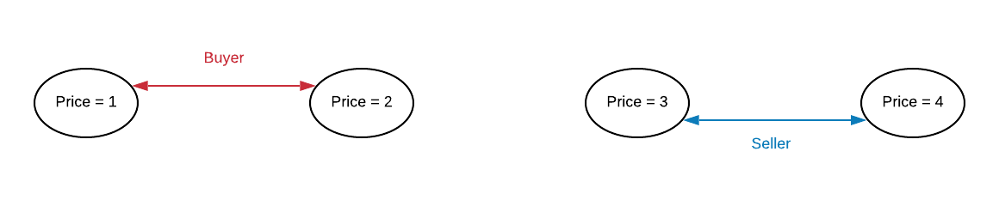
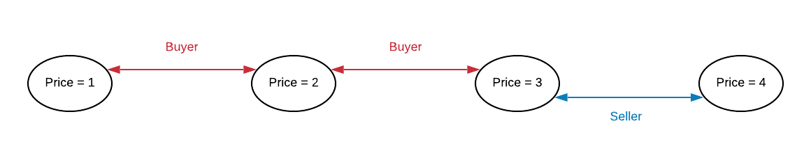
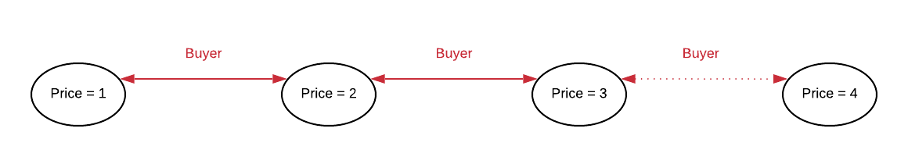

In this section, we will discuss the main components of the project. All of them together will create the experimental environment where our model will produce different outputs based on the experimental set-up defined for every experiment.
The agents are the base class to define all the different actors that will play a role in our model. Each of the agents are defined by simple elements, that will be explained below.
However, with the addition of some particular specialisation for the agents, we can create the final entities for the project: the buyers and the sellers.
This kind of agent is the one that has the goal to acquire new product for the lowest possible price. They represent the buyers that have some kind of necessity. The kind of information that they will be gossiping with other agents is "I bought the product for less than X euros.". The idea is that they want to show they made a good deal for their interest. Their range of possible prices will be the one created between the minimum possible price of the product and the maximum price they could pay. After gossiping, they can delimit the upper bounding, which will be increased if they can not arrange a deal. The buyers are also in charge of selecting a seller to interact with, from the available ones.
This kind of agent is the one that has the goal to sell a product for the highest possible price. They represent the seller that have some stock of a product. The kind of information that they will be gossiping with other agents is "I sold the product for more than X euros.". The idea is that they want to show they made a good deal for their interest. Their range of possible prices will be the one created between the maximum possible price of the product and the minimum price they could sell the product. After gossiping, they can delimit the lower bounding, which will be decreased if they can not arrange a deal.
The interaction between the pair formed by Buyer-Seller will be based on the possible worlds considered by both of them. This could lead to different scenarios of agreement or no deal. All the agents say always the truth, so real information is going to be transfer and knowledge is going to be gained after each transaction or gossip. The way to determine if two Agents are able to arrange a price is checking if there is any possible world accessible by both of them. In the figure below, we have an example of two agents that don't have any world in common, so no deal could be reached.
However, in the next figure (below), the world where the price is equal to 3 is considered possible by both of them, so they could make a deal in this scenario.
Another important consideration of Logic in the project is the way each agent update the possible worlds. Based on the information received by other Agents, the agent can modify the boundary of the prices. In the example shown below, the Buyer consider possible any price from 1 to 4. However, after gossiping, the world of 4 is not longer an option, being reduced to the prices from 1 to 3.
 {% endblock %} {% block body-right %} {% endblock %}